fit ebpmf to sla full data with non-negative constraints, new version with different baseline
DongyueXie
2023-08-06
Last updated: 2023-08-07
Checks: 7 0
Knit directory: gsmash/
This reproducible R Markdown analysis was created with workflowr (version 1.6.2). The Checks tab describes the reproducibility checks that were applied when the results were created. The Past versions tab lists the development history.
Great! Since the R Markdown file has been committed to the Git repository, you know the exact version of the code that produced these results.
Great job! The global environment was empty. Objects defined in the global environment can affect the analysis in your R Markdown file in unknown ways. For reproduciblity it’s best to always run the code in an empty environment.
The command set.seed(20220606) was run prior to running
the code in the R Markdown file. Setting a seed ensures that any results
that rely on randomness, e.g. subsampling or permutations, are
reproducible.
Great job! Recording the operating system, R version, and package versions is critical for reproducibility.
Nice! There were no cached chunks for this analysis, so you can be confident that you successfully produced the results during this run.
Great job! Using relative paths to the files within your workflowr project makes it easier to run your code on other machines.
Great! You are using Git for version control. Tracking code development and connecting the code version to the results is critical for reproducibility.
The results in this page were generated with repository version d0c8224. See the Past versions tab to see a history of the changes made to the R Markdown and HTML files.
Note that you need to be careful to ensure that all relevant files for
the analysis have been committed to Git prior to generating the results
(you can use wflow_publish or
wflow_git_commit). workflowr only checks the R Markdown
file, but you know if there are other scripts or data files that it
depends on. Below is the status of the Git repository when the results
were generated:
Ignored files:
Ignored: .Rhistory
Ignored: .Rproj.user/
Untracked files:
Untracked: analysis/GO_ORA_montoro.Rmd
Untracked: analysis/GO_ORA_pbmc_purified.Rmd
Untracked: analysis/fit_ebpmf_sla_2000.Rmd
Untracked: analysis/poisson_deviance.Rmd
Untracked: analysis/sla_data.Rmd
Untracked: chipexo_rep1_reverse.rds
Untracked: data/Citation.RData
Untracked: data/SLA/
Untracked: data/abstract.txt
Untracked: data/abstract.vocab.txt
Untracked: data/ap.txt
Untracked: data/ap.vocab.txt
Untracked: data/sla_2000.rds
Untracked: data/sla_full.rds
Untracked: data/text.R
Untracked: data/tpm3.rds
Untracked: output/driving_gene_pbmc.rds
Untracked: output/pbmc_gsea.rds
Untracked: output/plots/
Untracked: output/tpm3_fit_fasttopics.rds
Untracked: output/tpm3_fit_stm.rds
Untracked: output/tpm3_fit_stm_slow.rds
Untracked: sla.rds
Unstaged changes:
Modified: analysis/PMF_splitting.Rmd
Modified: analysis/fit_ebpmf_sla.Rmd
Modified: code/poisson_STM/structure_plot.R
Modified: code/poisson_mean/pois_log_normal_mle.R
Note that any generated files, e.g. HTML, png, CSS, etc., are not included in this status report because it is ok for generated content to have uncommitted changes.
These are the previous versions of the repository in which changes were
made to the R Markdown
(analysis/fit_ebpmf_sla_full_nonneg.Rmd) and HTML
(docs/fit_ebpmf_sla_full_nonneg.html) files. If you’ve
configured a remote Git repository (see ?wflow_git_remote),
click on the hyperlinks in the table below to view the files as they
were in that past version.
| File | Version | Author | Date | Message |
|---|---|---|---|---|
| Rmd | d0c8224 | DongyueXie | 2023-08-07 | wflow_publish(c("analysis/fit_ebpmf_sla_nonneg.Rmd", "analysis/fit_ebpmf_sla_full_nonneg.Rmd", |
Introduction
library(Matrix)
datax = readRDS('data/sla_full.rds')
dim(datax$data)[1] 3207 10104sum(datax$data==0)/prod(dim(datax$data))[1] 0.9948157datax$data = Matrix(datax$data,sparse = TRUE)Data filtering
filter out some documents: use top 60% longest ones as in Ke and Wang 2022.
doc_to_use = order(rowSums(datax$data),decreasing = T)[1:round(nrow(datax$data)*0.6)]
mat = datax$data[doc_to_use,]
samples = datax$samples
samples = lapply(samples, function(z){z[doc_to_use]})i filtered out words that appear in less than 5 documents. This results in around 2000 words
word_to_use = which(colSums(mat>0)>=5)
mat = mat[,word_to_use]model fitting
Topic model
library(fastTopics)
fit_tm = fit_topic_model(mat,k=6)Initializing factors using Topic SCORE algorithm.
Initializing loadings by running 10 SCD updates.
Fitting rank-6 Poisson NMF to 1924 x 2172 sparse matrix.
Running 100 EM updates, without extrapolation (fastTopics 0.6-142).
Refining model fit.
Fitting rank-6 Poisson NMF to 1924 x 2172 sparse matrix.
Running 100 SCD updates, with extrapolation (fastTopics 0.6-142).structure_plot(fit_tm,grouping = samples$journal,gap = 40)Running tsne on 508 x 6 matrix.Read the 508 x 6 data matrix successfully!
OpenMP is working. 1 threads.
Using no_dims = 1, perplexity = 100.000000, and theta = 0.100000
Computing input similarities...
Building tree...
Done in 0.17 seconds (sparsity = 0.729579)!
Learning embedding...
Iteration 50: error is 48.562297 (50 iterations in 0.08 seconds)
Iteration 100: error is 48.562296 (50 iterations in 0.06 seconds)
Iteration 150: error is 48.562285 (50 iterations in 0.06 seconds)
Iteration 200: error is 48.561990 (50 iterations in 0.07 seconds)
Iteration 250: error is 48.554647 (50 iterations in 0.07 seconds)
Iteration 300: error is 0.686755 (50 iterations in 0.06 seconds)
Iteration 350: error is 0.677210 (50 iterations in 0.06 seconds)
Iteration 400: error is 0.676823 (50 iterations in 0.07 seconds)
Iteration 450: error is 0.676820 (50 iterations in 0.06 seconds)
Iteration 500: error is 0.676819 (50 iterations in 0.07 seconds)
Iteration 550: error is 0.676820 (50 iterations in 0.06 seconds)
Iteration 600: error is 0.676820 (50 iterations in 0.07 seconds)
Iteration 650: error is 0.676820 (50 iterations in 0.07 seconds)
Iteration 700: error is 0.676820 (50 iterations in 0.06 seconds)
Iteration 750: error is 0.676820 (50 iterations in 0.06 seconds)
Iteration 800: error is 0.676820 (50 iterations in 0.07 seconds)
Iteration 850: error is 0.676820 (50 iterations in 0.07 seconds)
Iteration 900: error is 0.676820 (50 iterations in 0.06 seconds)
Iteration 950: error is 0.676820 (50 iterations in 0.06 seconds)
Iteration 1000: error is 0.676820 (50 iterations in 0.07 seconds)
Fitting performed in 1.31 seconds.Running tsne on 280 x 6 matrix.Read the 280 x 6 data matrix successfully!
OpenMP is working. 1 threads.
Using no_dims = 1, perplexity = 92.000000, and theta = 0.100000
Computing input similarities...
Building tree...
Done in 0.08 seconds (sparsity = 0.996276)!
Learning embedding...
Iteration 50: error is 42.317466 (50 iterations in 0.04 seconds)
Iteration 100: error is 42.315966 (50 iterations in 0.03 seconds)
Iteration 150: error is 42.319973 (50 iterations in 0.03 seconds)
Iteration 200: error is 42.316438 (50 iterations in 0.04 seconds)
Iteration 250: error is 42.317942 (50 iterations in 0.04 seconds)
Iteration 300: error is 0.596700 (50 iterations in 0.03 seconds)
Iteration 350: error is 0.593616 (50 iterations in 0.03 seconds)
Iteration 400: error is 0.593557 (50 iterations in 0.02 seconds)
Iteration 450: error is 0.593559 (50 iterations in 0.02 seconds)
Iteration 500: error is 0.593559 (50 iterations in 0.02 seconds)
Iteration 550: error is 0.593558 (50 iterations in 0.03 seconds)
Iteration 600: error is 0.593557 (50 iterations in 0.03 seconds)
Iteration 650: error is 0.593560 (50 iterations in 0.03 seconds)
Iteration 700: error is 0.593558 (50 iterations in 0.03 seconds)
Iteration 750: error is 0.593558 (50 iterations in 0.03 seconds)
Iteration 800: error is 0.593557 (50 iterations in 0.03 seconds)
Iteration 850: error is 0.593560 (50 iterations in 0.02 seconds)
Iteration 900: error is 0.593558 (50 iterations in 0.02 seconds)
Iteration 950: error is 0.593559 (50 iterations in 0.03 seconds)
Iteration 1000: error is 0.593561 (50 iterations in 0.03 seconds)
Fitting performed in 0.58 seconds.Running tsne on 885 x 6 matrix.Read the 885 x 6 data matrix successfully!
OpenMP is working. 1 threads.
Using no_dims = 1, perplexity = 100.000000, and theta = 0.100000
Computing input similarities...
Building tree...
Done in 0.31 seconds (sparsity = 0.427212)!
Learning embedding...
Iteration 50: error is 55.504593 (50 iterations in 0.14 seconds)
Iteration 100: error is 54.445823 (50 iterations in 0.14 seconds)
Iteration 150: error is 54.377950 (50 iterations in 0.14 seconds)
Iteration 200: error is 54.377285 (50 iterations in 0.14 seconds)
Iteration 250: error is 54.377274 (50 iterations in 0.13 seconds)
Iteration 300: error is 0.882969 (50 iterations in 0.14 seconds)
Iteration 350: error is 0.834086 (50 iterations in 0.13 seconds)
Iteration 400: error is 0.828672 (50 iterations in 0.14 seconds)
Iteration 450: error is 0.828221 (50 iterations in 0.13 seconds)
Iteration 500: error is 0.828197 (50 iterations in 0.14 seconds)
Iteration 550: error is 0.828194 (50 iterations in 0.13 seconds)
Iteration 600: error is 0.828190 (50 iterations in 0.14 seconds)
Iteration 650: error is 0.828192 (50 iterations in 0.13 seconds)
Iteration 700: error is 0.828192 (50 iterations in 0.13 seconds)
Iteration 750: error is 0.828004 (50 iterations in 0.14 seconds)
Iteration 800: error is 0.827622 (50 iterations in 0.14 seconds)
Iteration 850: error is 0.827596 (50 iterations in 0.14 seconds)
Iteration 900: error is 0.827587 (50 iterations in 0.13 seconds)
Iteration 950: error is 0.827588 (50 iterations in 0.14 seconds)
Iteration 1000: error is 0.827588 (50 iterations in 0.14 seconds)
Fitting performed in 2.73 seconds.Running tsne on 251 x 6 matrix.Read the 251 x 6 data matrix successfully!
OpenMP is working. 1 threads.
Using no_dims = 1, perplexity = 82.000000, and theta = 0.100000
Computing input similarities...
Building tree...
Done in 0.06 seconds (sparsity = 0.995603)!
Learning embedding...
Iteration 50: error is 42.601631 (50 iterations in 0.03 seconds)
Iteration 100: error is 42.591712 (50 iterations in 0.03 seconds)
Iteration 150: error is 42.593343 (50 iterations in 0.02 seconds)
Iteration 200: error is 42.586989 (50 iterations in 0.03 seconds)
Iteration 250: error is 42.597599 (50 iterations in 0.03 seconds)
Iteration 300: error is 0.510905 (50 iterations in 0.03 seconds)
Iteration 350: error is 0.510105 (50 iterations in 0.03 seconds)
Iteration 400: error is 0.510108 (50 iterations in 0.02 seconds)
Iteration 450: error is 0.510107 (50 iterations in 0.02 seconds)
Iteration 500: error is 0.510107 (50 iterations in 0.03 seconds)
Iteration 550: error is 0.510107 (50 iterations in 0.02 seconds)
Iteration 600: error is 0.510107 (50 iterations in 0.02 seconds)
Iteration 650: error is 0.510107 (50 iterations in 0.03 seconds)
Iteration 700: error is 0.510107 (50 iterations in 0.02 seconds)
Iteration 750: error is 0.510107 (50 iterations in 0.02 seconds)
Iteration 800: error is 0.510107 (50 iterations in 0.03 seconds)
Iteration 850: error is 0.510107 (50 iterations in 0.02 seconds)
Iteration 900: error is 0.510107 (50 iterations in 0.02 seconds)
Iteration 950: error is 0.510107 (50 iterations in 0.03 seconds)
Iteration 1000: error is 0.510107 (50 iterations in 0.02 seconds)
Fitting performed in 0.50 seconds.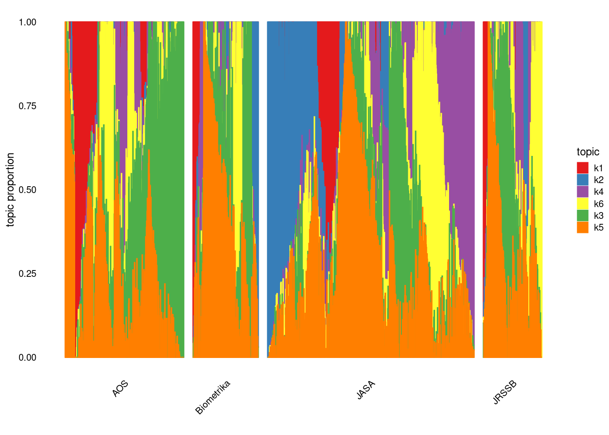
structure_plot(fit_tm,grouping = samples$year,gap = 40)Running tsne on 152 x 6 matrix.Read the 152 x 6 data matrix successfully!
OpenMP is working. 1 threads.
Using no_dims = 1, perplexity = 49.000000, and theta = 0.100000
Computing input similarities...
Building tree...
Done in 0.02 seconds (sparsity = 0.992382)!
Learning embedding...
Iteration 50: error is 44.892522 (50 iterations in 0.01 seconds)
Iteration 100: error is 45.678188 (50 iterations in 0.01 seconds)
Iteration 150: error is 45.599320 (50 iterations in 0.01 seconds)
Iteration 200: error is 43.996469 (50 iterations in 0.01 seconds)
Iteration 250: error is 44.259376 (50 iterations in 0.01 seconds)
Iteration 300: error is 0.982888 (50 iterations in 0.02 seconds)
Iteration 350: error is 0.821898 (50 iterations in 0.01 seconds)
Iteration 400: error is 0.715514 (50 iterations in 0.01 seconds)
Iteration 450: error is 0.715436 (50 iterations in 0.01 seconds)
Iteration 500: error is 0.715437 (50 iterations in 0.01 seconds)
Iteration 550: error is 0.715437 (50 iterations in 0.01 seconds)
Iteration 600: error is 0.715437 (50 iterations in 0.01 seconds)
Iteration 650: error is 0.715437 (50 iterations in 0.01 seconds)
Iteration 700: error is 0.715437 (50 iterations in 0.01 seconds)
Iteration 750: error is 0.715437 (50 iterations in 0.01 seconds)
Iteration 800: error is 0.715437 (50 iterations in 0.01 seconds)
Iteration 850: error is 0.715437 (50 iterations in 0.01 seconds)
Iteration 900: error is 0.715437 (50 iterations in 0.01 seconds)
Iteration 950: error is 0.715437 (50 iterations in 0.01 seconds)
Iteration 1000: error is 0.715437 (50 iterations in 0.01 seconds)
Fitting performed in 0.21 seconds.Running tsne on 181 x 6 matrix.Read the 181 x 6 data matrix successfully!
OpenMP is working. 1 threads.
Using no_dims = 1, perplexity = 59.000000, and theta = 0.100000
Computing input similarities...
Building tree...
Done in 0.03 seconds (sparsity = 0.994109)!
Learning embedding...
Iteration 50: error is 43.597830 (50 iterations in 0.02 seconds)
Iteration 100: error is 42.897545 (50 iterations in 0.02 seconds)
Iteration 150: error is 42.723976 (50 iterations in 0.02 seconds)
Iteration 200: error is 42.688333 (50 iterations in 0.01 seconds)
Iteration 250: error is 42.936559 (50 iterations in 0.01 seconds)
Iteration 300: error is 0.639066 (50 iterations in 0.01 seconds)
Iteration 350: error is 0.626459 (50 iterations in 0.02 seconds)
Iteration 400: error is 0.626472 (50 iterations in 0.01 seconds)
Iteration 450: error is 0.626472 (50 iterations in 0.01 seconds)
Iteration 500: error is 0.626472 (50 iterations in 0.01 seconds)
Iteration 550: error is 0.626472 (50 iterations in 0.01 seconds)
Iteration 600: error is 0.626472 (50 iterations in 0.01 seconds)
Iteration 650: error is 0.626472 (50 iterations in 0.01 seconds)
Iteration 700: error is 0.626472 (50 iterations in 0.01 seconds)
Iteration 750: error is 0.626472 (50 iterations in 0.01 seconds)
Iteration 800: error is 0.626472 (50 iterations in 0.01 seconds)
Iteration 850: error is 0.626472 (50 iterations in 0.01 seconds)
Iteration 900: error is 0.626472 (50 iterations in 0.02 seconds)
Iteration 950: error is 0.626472 (50 iterations in 0.01 seconds)
Iteration 1000: error is 0.626472 (50 iterations in 0.02 seconds)
Fitting performed in 0.26 seconds.Running tsne on 187 x 6 matrix.Read the 187 x 6 data matrix successfully!
OpenMP is working. 1 threads.
Using no_dims = 1, perplexity = 61.000000, and theta = 0.100000
Computing input similarities...
Building tree...
Done in 0.03 seconds (sparsity = 0.994252)!
Learning embedding...
Iteration 50: error is 42.799069 (50 iterations in 0.02 seconds)
Iteration 100: error is 42.726939 (50 iterations in 0.02 seconds)
Iteration 150: error is 42.675559 (50 iterations in 0.02 seconds)
Iteration 200: error is 42.702685 (50 iterations in 0.02 seconds)
Iteration 250: error is 42.937613 (50 iterations in 0.02 seconds)
Iteration 300: error is 0.633505 (50 iterations in 0.02 seconds)
Iteration 350: error is 0.631171 (50 iterations in 0.02 seconds)
Iteration 400: error is 0.631175 (50 iterations in 0.01 seconds)
Iteration 450: error is 0.631175 (50 iterations in 0.02 seconds)
Iteration 500: error is 0.631175 (50 iterations in 0.01 seconds)
Iteration 550: error is 0.631175 (50 iterations in 0.02 seconds)
Iteration 600: error is 0.631175 (50 iterations in 0.01 seconds)
Iteration 650: error is 0.631175 (50 iterations in 0.01 seconds)
Iteration 700: error is 0.631175 (50 iterations in 0.02 seconds)
Iteration 750: error is 0.631175 (50 iterations in 0.02 seconds)
Iteration 800: error is 0.631175 (50 iterations in 0.01 seconds)
Iteration 850: error is 0.631175 (50 iterations in 0.02 seconds)
Iteration 900: error is 0.631175 (50 iterations in 0.01 seconds)
Iteration 950: error is 0.631175 (50 iterations in 0.02 seconds)
Iteration 1000: error is 0.631175 (50 iterations in 0.02 seconds)
Fitting performed in 0.34 seconds.Running tsne on 189 x 6 matrix.Read the 189 x 6 data matrix successfully!
OpenMP is working. 1 threads.
Using no_dims = 1, perplexity = 61.000000, and theta = 0.100000
Computing input similarities...
Building tree...
Done in 0.03 seconds (sparsity = 0.993701)!
Learning embedding...
Iteration 50: error is 42.826414 (50 iterations in 0.02 seconds)
Iteration 100: error is 43.133852 (50 iterations in 0.02 seconds)
Iteration 150: error is 42.806690 (50 iterations in 0.02 seconds)
Iteration 200: error is 42.857863 (50 iterations in 0.02 seconds)
Iteration 250: error is 42.776725 (50 iterations in 0.02 seconds)
Iteration 300: error is 0.590795 (50 iterations in 0.02 seconds)
Iteration 350: error is 0.583373 (50 iterations in 0.01 seconds)
Iteration 400: error is 0.583379 (50 iterations in 0.02 seconds)
Iteration 450: error is 0.583379 (50 iterations in 0.01 seconds)
Iteration 500: error is 0.583379 (50 iterations in 0.01 seconds)
Iteration 550: error is 0.583379 (50 iterations in 0.02 seconds)
Iteration 600: error is 0.583380 (50 iterations in 0.01 seconds)
Iteration 650: error is 0.583379 (50 iterations in 0.01 seconds)
Iteration 700: error is 0.583380 (50 iterations in 0.01 seconds)
Iteration 750: error is 0.583379 (50 iterations in 0.01 seconds)
Iteration 800: error is 0.583379 (50 iterations in 0.02 seconds)
Iteration 850: error is 0.583379 (50 iterations in 0.01 seconds)
Iteration 900: error is 0.583379 (50 iterations in 0.01 seconds)
Iteration 950: error is 0.583380 (50 iterations in 0.02 seconds)
Iteration 1000: error is 0.583379 (50 iterations in 0.01 seconds)
Fitting performed in 0.30 seconds.Running tsne on 206 x 6 matrix.Read the 206 x 6 data matrix successfully!
OpenMP is working. 1 threads.
Using no_dims = 1, perplexity = 67.000000, and theta = 0.100000
Computing input similarities...
Building tree...
Done in 0.03 seconds (sparsity = 0.994627)!
Learning embedding...
Iteration 50: error is 43.004693 (50 iterations in 0.02 seconds)
Iteration 100: error is 43.357393 (50 iterations in 0.02 seconds)
Iteration 150: error is 42.686152 (50 iterations in 0.02 seconds)
Iteration 200: error is 42.624402 (50 iterations in 0.02 seconds)
Iteration 250: error is 42.874505 (50 iterations in 0.01 seconds)
Iteration 300: error is 0.563930 (50 iterations in 0.02 seconds)
Iteration 350: error is 0.553333 (50 iterations in 0.01 seconds)
Iteration 400: error is 0.553345 (50 iterations in 0.01 seconds)
Iteration 450: error is 0.553346 (50 iterations in 0.01 seconds)
Iteration 500: error is 0.553346 (50 iterations in 0.02 seconds)
Iteration 550: error is 0.553345 (50 iterations in 0.02 seconds)
Iteration 600: error is 0.553346 (50 iterations in 0.02 seconds)
Iteration 650: error is 0.553345 (50 iterations in 0.02 seconds)
Iteration 700: error is 0.553346 (50 iterations in 0.02 seconds)
Iteration 750: error is 0.553346 (50 iterations in 0.02 seconds)
Iteration 800: error is 0.553345 (50 iterations in 0.02 seconds)
Iteration 850: error is 0.553346 (50 iterations in 0.01 seconds)
Iteration 900: error is 0.553346 (50 iterations in 0.01 seconds)
Iteration 950: error is 0.553345 (50 iterations in 0.01 seconds)
Iteration 1000: error is 0.553347 (50 iterations in 0.01 seconds)
Fitting performed in 0.32 seconds.Running tsne on 230 x 6 matrix.Read the 230 x 6 data matrix successfully!
OpenMP is working. 1 threads.
Using no_dims = 1, perplexity = 75.000000, and theta = 0.100000
Computing input similarities...
Building tree...
Done in 0.04 seconds (sparsity = 0.995161)!
Learning embedding...
Iteration 50: error is 42.899787 (50 iterations in 0.03 seconds)
Iteration 100: error is 42.617172 (50 iterations in 0.02 seconds)
Iteration 150: error is 42.612227 (50 iterations in 0.02 seconds)
Iteration 200: error is 42.629787 (50 iterations in 0.02 seconds)
Iteration 250: error is 42.614906 (50 iterations in 0.03 seconds)
Iteration 300: error is 0.447821 (50 iterations in 0.02 seconds)
Iteration 350: error is 0.446280 (50 iterations in 0.02 seconds)
Iteration 400: error is 0.446298 (50 iterations in 0.02 seconds)
Iteration 450: error is 0.446298 (50 iterations in 0.02 seconds)
Iteration 500: error is 0.446298 (50 iterations in 0.02 seconds)
Iteration 550: error is 0.446298 (50 iterations in 0.02 seconds)
Iteration 600: error is 0.446298 (50 iterations in 0.02 seconds)
Iteration 650: error is 0.446298 (50 iterations in 0.02 seconds)
Iteration 700: error is 0.446298 (50 iterations in 0.01 seconds)
Iteration 750: error is 0.446298 (50 iterations in 0.02 seconds)
Iteration 800: error is 0.446298 (50 iterations in 0.02 seconds)
Iteration 850: error is 0.446298 (50 iterations in 0.02 seconds)
Iteration 900: error is 0.446298 (50 iterations in 0.02 seconds)
Iteration 950: error is 0.446298 (50 iterations in 0.02 seconds)
Iteration 1000: error is 0.446298 (50 iterations in 0.02 seconds)
Fitting performed in 0.41 seconds.Running tsne on 266 x 6 matrix.Read the 266 x 6 data matrix successfully!
OpenMP is working. 1 threads.
Using no_dims = 1, perplexity = 87.000000, and theta = 0.100000
Computing input similarities...
Building tree...
Done in 0.06 seconds (sparsity = 0.995916)!
Learning embedding...
Iteration 50: error is 42.620531 (50 iterations in 0.02 seconds)
Iteration 100: error is 42.645007 (50 iterations in 0.03 seconds)
Iteration 150: error is 42.620975 (50 iterations in 0.03 seconds)
Iteration 200: error is 42.634849 (50 iterations in 0.03 seconds)
Iteration 250: error is 42.621802 (50 iterations in 0.03 seconds)
Iteration 300: error is 0.584662 (50 iterations in 0.02 seconds)
Iteration 350: error is 0.581124 (50 iterations in 0.02 seconds)
Iteration 400: error is 0.581122 (50 iterations in 0.02 seconds)
Iteration 450: error is 0.581122 (50 iterations in 0.02 seconds)
Iteration 500: error is 0.581122 (50 iterations in 0.02 seconds)
Iteration 550: error is 0.581122 (50 iterations in 0.03 seconds)
Iteration 600: error is 0.581122 (50 iterations in 0.03 seconds)
Iteration 650: error is 0.581122 (50 iterations in 0.03 seconds)
Iteration 700: error is 0.581122 (50 iterations in 0.03 seconds)
Iteration 750: error is 0.581122 (50 iterations in 0.02 seconds)
Iteration 800: error is 0.581122 (50 iterations in 0.02 seconds)
Iteration 850: error is 0.581122 (50 iterations in 0.02 seconds)
Iteration 900: error is 0.581122 (50 iterations in 0.03 seconds)
Iteration 950: error is 0.581122 (50 iterations in 0.03 seconds)
Iteration 1000: error is 0.581122 (50 iterations in 0.03 seconds)
Fitting performed in 0.51 seconds.Running tsne on 222 x 6 matrix.Read the 222 x 6 data matrix successfully!
OpenMP is working. 1 threads.
Using no_dims = 1, perplexity = 72.000000, and theta = 0.100000
Computing input similarities...
Building tree...
Done in 0.04 seconds (sparsity = 0.994806)!
Learning embedding...
Iteration 50: error is 42.810554 (50 iterations in 0.02 seconds)
Iteration 100: error is 42.708081 (50 iterations in 0.02 seconds)
Iteration 150: error is 42.719337 (50 iterations in 0.02 seconds)
Iteration 200: error is 42.736143 (50 iterations in 0.02 seconds)
Iteration 250: error is 42.725231 (50 iterations in 0.03 seconds)
Iteration 300: error is 0.531384 (50 iterations in 0.02 seconds)
Iteration 350: error is 0.527195 (50 iterations in 0.02 seconds)
Iteration 400: error is 0.527209 (50 iterations in 0.01 seconds)
Iteration 450: error is 0.527208 (50 iterations in 0.02 seconds)
Iteration 500: error is 0.527208 (50 iterations in 0.02 seconds)
Iteration 550: error is 0.527208 (50 iterations in 0.02 seconds)
Iteration 600: error is 0.527208 (50 iterations in 0.02 seconds)
Iteration 650: error is 0.527208 (50 iterations in 0.01 seconds)
Iteration 700: error is 0.527208 (50 iterations in 0.02 seconds)
Iteration 750: error is 0.527208 (50 iterations in 0.02 seconds)
Iteration 800: error is 0.527208 (50 iterations in 0.02 seconds)
Iteration 850: error is 0.527208 (50 iterations in 0.02 seconds)
Iteration 900: error is 0.527208 (50 iterations in 0.02 seconds)
Iteration 950: error is 0.527208 (50 iterations in 0.01 seconds)
Iteration 1000: error is 0.527208 (50 iterations in 0.01 seconds)
Fitting performed in 0.37 seconds.Running tsne on 208 x 6 matrix.Read the 208 x 6 data matrix successfully!
OpenMP is working. 1 threads.
Using no_dims = 1, perplexity = 68.000000, and theta = 0.100000
Computing input similarities...
Building tree...
Done in 0.04 seconds (sparsity = 0.994776)!
Learning embedding...
Iteration 50: error is 43.359966 (50 iterations in 0.02 seconds)
Iteration 100: error is 43.126280 (50 iterations in 0.02 seconds)
Iteration 150: error is 42.791365 (50 iterations in 0.02 seconds)
Iteration 200: error is 42.756129 (50 iterations in 0.02 seconds)
Iteration 250: error is 42.685156 (50 iterations in 0.02 seconds)
Iteration 300: error is 0.497388 (50 iterations in 0.01 seconds)
Iteration 350: error is 0.495079 (50 iterations in 0.01 seconds)
Iteration 400: error is 0.495079 (50 iterations in 0.01 seconds)
Iteration 450: error is 0.495080 (50 iterations in 0.01 seconds)
Iteration 500: error is 0.495080 (50 iterations in 0.02 seconds)
Iteration 550: error is 0.495081 (50 iterations in 0.02 seconds)
Iteration 600: error is 0.495080 (50 iterations in 0.02 seconds)
Iteration 650: error is 0.495080 (50 iterations in 0.02 seconds)
Iteration 700: error is 0.495079 (50 iterations in 0.02 seconds)
Iteration 750: error is 0.495080 (50 iterations in 0.02 seconds)
Iteration 800: error is 0.495079 (50 iterations in 0.01 seconds)
Iteration 850: error is 0.495080 (50 iterations in 0.01 seconds)
Iteration 900: error is 0.495081 (50 iterations in 0.01 seconds)
Iteration 950: error is 0.495079 (50 iterations in 0.02 seconds)
Iteration 1000: error is 0.495079 (50 iterations in 0.02 seconds)
Fitting performed in 0.33 seconds.Running tsne on 83 x 6 matrix.Read the 83 x 6 data matrix successfully!
OpenMP is working. 1 threads.
Using no_dims = 1, perplexity = 26.000000, and theta = 0.100000
Computing input similarities...
Building tree...
Done in 0.00 seconds (sparsity = 0.984178)!
Learning embedding...
Iteration 50: error is 53.178840 (50 iterations in 0.01 seconds)
Iteration 100: error is 50.389375 (50 iterations in 0.00 seconds)
Iteration 150: error is 51.327735 (50 iterations in 0.01 seconds)
Iteration 200: error is 54.831404 (50 iterations in 0.00 seconds)
Iteration 250: error is 49.364321 (50 iterations in 0.01 seconds)
Iteration 300: error is 1.904241 (50 iterations in 0.00 seconds)
Iteration 350: error is 0.887961 (50 iterations in 0.01 seconds)
Iteration 400: error is 0.865750 (50 iterations in 0.00 seconds)
Iteration 450: error is 0.860963 (50 iterations in 0.01 seconds)
Iteration 500: error is 0.860960 (50 iterations in 0.00 seconds)
Iteration 550: error is 0.860960 (50 iterations in 0.01 seconds)
Iteration 600: error is 0.860960 (50 iterations in 0.00 seconds)
Iteration 650: error is 0.860960 (50 iterations in 0.00 seconds)
Iteration 700: error is 0.860960 (50 iterations in 0.00 seconds)
Iteration 750: error is 0.860960 (50 iterations in 0.00 seconds)
Iteration 800: error is 0.860960 (50 iterations in 0.01 seconds)
Iteration 850: error is 0.860960 (50 iterations in 0.00 seconds)
Iteration 900: error is 0.860960 (50 iterations in 0.01 seconds)
Iteration 950: error is 0.860960 (50 iterations in 0.00 seconds)
Iteration 1000: error is 0.860960 (50 iterations in 0.00 seconds)
Fitting performed in 0.08 seconds.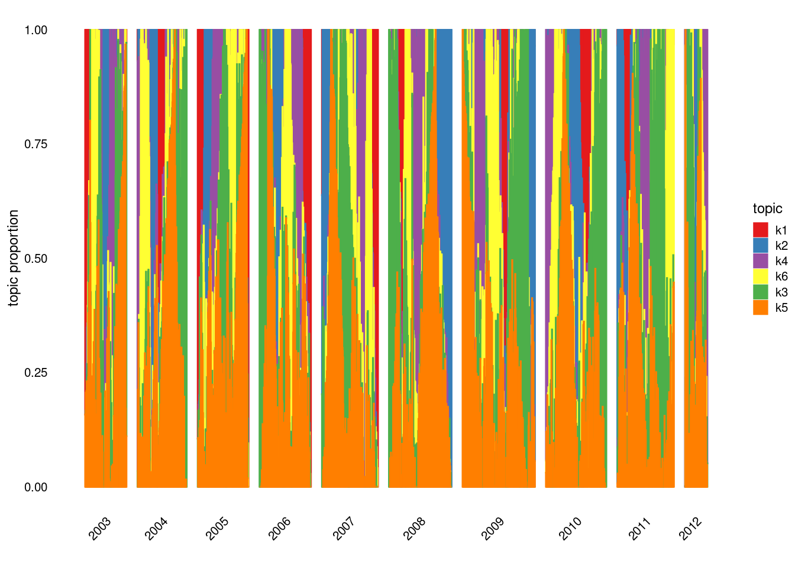
perform de analysis to find driving genes for each cluster
de = de_analysis(fit_tm,mat)Fitting 2172 Poisson models with k=6 using method="scd".
Computing log-fold change statistics from 2172 Poisson models with k=6.
Stabilizing posterior log-fold change estimates using adaptive shrinkage.saveRDS(list(fit_tm=fit_tm,de=de),file='/project2/mstephens/dongyue/poisson_mf/sla/sla_full_tm_fit_w5.rds')
for(k in 1:6){
dat <- data.frame(postmean = de$postmean[,k],
z = de$z[,k],
lfsr = de$lfsr[,k])
rownames(dat) <- colnames(mat)
dat <- subset(dat,lfsr < 0.01)
dat <- dat[order(dat$postmean,decreasing = TRUE),]
print(head(dat,n=10))
print(tail(dat,n=10))
#print(colnames(datax$data)[order(temp$lfsr[,k],decreasing = F)[1:10]])
} postmean z lfsr
confid 3.405930 9.526146 5.529115e-20
chisquar 3.391625 4.503419 9.800732e-05
breakdown 3.389011 3.589558 2.522073e-03
discoveri 3.096521 4.091587 6.328736e-04
power 2.672439 9.493335 2.962985e-19
formula 2.294704 3.664258 3.828698e-03
procedur 2.207936 13.522585 6.863036e-39
interv 2.193019 6.169530 9.254779e-08
critic 1.914972 4.753144 1.642495e-04
altern 1.836956 8.620587 2.667514e-15
postmean z lfsr
control 1.7936322 7.559514 1.255524e-11
ratio 1.4996403 5.621007 2.480216e-06
rank 1.4034316 5.162234 2.143093e-05
statist 1.3349162 6.666447 4.198215e-09
multipl 1.0791881 4.640164 1.211082e-04
limit 1.0784120 3.614141 3.573844e-03
base 0.7406183 4.915905 3.130204e-05
distribut -0.3017093 -7.975598 6.938894e-13
seri -0.5638466 -4.135521 1.194569e-03
optim -1.9515713 -8.650396 1.887379e-15
postmean z lfsr
assign 3.923029 4.991299 8.514410e-06
nation 3.834770 4.132457 3.963754e-04
infect 3.753605 3.094022 7.730399e-03
event 3.276756 7.708136 3.857592e-13
instrument 3.257433 6.336217 5.730562e-09
genet 3.014774 3.860045 1.426017e-03
prevent 2.845345 3.758809 2.146398e-03
associ 2.485518 6.063882 1.114911e-07
adjust 2.331868 5.701582 1.120759e-06
popul 2.177936 5.825610 6.919158e-07
postmean z lfsr
random 0.6485969 3.350541 6.964773e-03
risk 0.5544884 3.358199 7.763703e-03
analysi 0.4175644 7.194164 1.523198e-10
model -0.2981601 -8.168756 1.502132e-13
rate -0.6465690 -13.582921 0.000000e+00
ratio -0.8606609 -4.323613 3.607277e-04
hierarch -1.0754893 -7.118891 9.553225e-11
censor -1.3914469 -5.964975 3.241606e-07
control -1.7909355 -7.703283 4.298339e-12
estim -1.9615988 -11.382813 0.000000e+00
postmean z lfsr
adapt 3.471352 9.158719 1.560408e-18
spline 3.412289 4.835045 2.100151e-05
criterion 3.376446 5.450625 9.136333e-07
crossvalid 2.976537 5.046873 1.225069e-05
select 2.733676 16.046564 1.808310e-55
penal 2.689769 3.619198 3.377636e-03
dimens 2.428283 4.877480 6.116989e-05
solv 2.266336 4.273021 7.642961e-04
classifi 2.204562 4.833287 9.639545e-05
reduct 2.105835 5.047037 4.071175e-05
postmean z lfsr
variabl 0.6333627 4.150885 9.411625e-04
problem 0.5522513 4.184155 1.060509e-03
rate -0.2945251 -3.770996 5.243186e-03
probabl -0.3494086 -4.548552 5.856123e-04
space -0.3776477 -4.874050 1.443415e-04
risk -0.5544884 -3.358199 7.763703e-03
algorithm -0.6832030 -5.133821 1.250190e-05
model -0.7783663 -4.869615 3.653983e-05
estim -1.3005048 -21.123768 0.000000e+00
asymptot -1.9346806 -10.099362 0.000000e+00
postmean z lfsr
field 4.003796 6.349313 3.877497e-09
network 3.853487 3.217885 5.958125e-03
curv 3.739214 5.700135 1.850571e-07
cluster 3.577014 11.288986 5.404292e-28
tempor 3.099178 4.932078 1.813926e-05
map 2.916676 4.160132 5.886239e-04
express 2.572289 7.544577 4.850122e-12
princip 2.508908 7.490370 8.149345e-12
differenti 2.180495 5.638793 1.927427e-06
decomposit 2.075193 3.535168 5.426547e-03
postmean z lfsr
situat -13.97009 -8.238176 2.552403e-13
main -14.18371 -11.189697 0.000000e+00
famili -14.53988 -9.609598 0.000000e+00
size -14.97851 -11.786674 0.000000e+00
class -15.22751 -10.341053 0.000000e+00
probabl -15.32523 -8.785346 2.442491e-15
assumpt -15.55330 -9.883447 0.000000e+00
rate -15.64599 -10.925726 0.000000e+00
paramet -15.77258 -8.587964 1.254552e-14
condit -16.94740 -12.412574 0.000000e+00
postmean z lfsr
nonparametr 2.750484 7.571064 2.823949e-12
frailti 2.603742 3.499248 4.639788e-03
equat 2.496133 4.327862 5.135868e-04
parametr 2.441435 3.693948 3.311359e-03
likelihood 2.250932 10.444150 5.369177e-23
maximum 1.902114 4.857514 1.069737e-04
covari 1.723593 6.915419 1.203851e-09
effici 1.657606 9.805873 6.090151e-20
varianc 1.508136 3.665847 4.120317e-03
propos 1.326936 10.975607 2.602594e-25
postmean z lfsr
estim 1.3005048 21.123768 7.992872e-96
simul 1.1546802 7.017171 2.485748e-10
illustr 0.9251532 3.639496 3.130887e-03
function 0.6040650 5.788718 5.063162e-07
matrix 0.4748351 36.483092 2.536946e-288
analysi -0.2734078 -5.319592 2.593976e-05
kernel -0.5377242 -11.155815 0.000000e+00
distribut -0.6647899 -3.659782 3.505901e-03
correl -0.6958437 -4.951993 2.933988e-05
squar -1.5203225 -35.007690 0.000000e+00
postmean z lfsr
wind 4.3215473 3.913049 9.968003e-04
bayesian 2.8795470 7.948040 1.215168e-13
extrem 2.0094675 4.729102 1.734177e-04
discret 1.6558837 3.944829 2.265556e-03
integr 1.2669160 3.458785 5.653508e-03
bay 1.2562694 3.676315 3.499806e-03
approxim 0.9592822 3.799611 2.075513e-03
algorithm 0.6901645 4.549229 1.823188e-04
data 0.6385399 13.082438 9.458756e-37
shape -1.1700565 -10.398650 0.000000e+00
postmean z lfsr
wind 4.3215473 3.913049 9.968003e-04
bayesian 2.8795470 7.948040 1.215168e-13
extrem 2.0094675 4.729102 1.734177e-04
discret 1.6558837 3.944829 2.265556e-03
integr 1.2669160 3.458785 5.653508e-03
bay 1.2562694 3.676315 3.499806e-03
approxim 0.9592822 3.799611 2.075513e-03
algorithm 0.6901645 4.549229 1.823188e-04
data 0.6385399 13.082438 9.458756e-37
shape -1.1700565 -10.398650 0.000000e+00EBNMF fit
library(flashier)Loading required package: magrittrLoading required package: ebnmlibrary(ebpmf)
Y_tilde = log_for_ebmf(mat)
fit_flash = flash(Y_tilde,ebnm_fn = ebnm::ebnm_point_exponential,var_type = 2,backfit = T,greedy_Kmax = 10)Adding factor 1 to flash object...
Adding factor 2 to flash object...
Adding factor 3 to flash object...
Adding factor 4 to flash object...
Adding factor 5 to flash object...
Adding factor 6 to flash object...
Adding factor 7 to flash object...
Adding factor 8 to flash object...
Adding factor 9 to flash object...
Adding factor 10 to flash object...
Wrapping up...
Done.
Backfitting 10 factors (tolerance: 6.23e-02)...
--Estimate of factor 2 is numerically zero!
--Estimate of factor 2 is numerically zero!
--Estimate of factor 4 is numerically zero!
--Estimate of factor 5 is numerically zero!
--Estimate of factor 1 is numerically zero!
--Estimate of factor 2 is numerically zero!
--Estimate of factor 4 is numerically zero!
--Estimate of factor 5 is numerically zero!
Difference between iterations is within 1.0e+04...
--Estimate of factor 1 is numerically zero!
--Estimate of factor 2 is numerically zero!
--Estimate of factor 4 is numerically zero!
--Estimate of factor 5 is numerically zero!
--Estimate of factor 1 is numerically zero!
--Estimate of factor 2 is numerically zero!
--Estimate of factor 4 is numerically zero!
--Estimate of factor 5 is numerically zero!
--Estimate of factor 1 is numerically zero!
--Estimate of factor 2 is numerically zero!
--Estimate of factor 4 is numerically zero!
--Estimate of factor 5 is numerically zero!
--Estimate of factor 1 is numerically zero!
--Estimate of factor 2 is numerically zero!
--Estimate of factor 4 is numerically zero!
--Estimate of factor 5 is numerically zero!
--Estimate of factor 1 is numerically zero!
--Estimate of factor 2 is numerically zero!
--Estimate of factor 4 is numerically zero!
--Estimate of factor 5 is numerically zero!
--Estimate of factor 1 is numerically zero!
--Estimate of factor 2 is numerically zero!
--Estimate of factor 4 is numerically zero!
--Estimate of factor 5 is numerically zero!
--Estimate of factor 1 is numerically zero!
--Estimate of factor 2 is numerically zero!
--Estimate of factor 4 is numerically zero!
--Estimate of factor 5 is numerically zero!
--Estimate of factor 1 is numerically zero!
--Estimate of factor 2 is numerically zero!
--Estimate of factor 4 is numerically zero!
--Estimate of factor 5 is numerically zero!
--Estimate of factor 1 is numerically zero!
--Estimate of factor 2 is numerically zero!
--Estimate of factor 4 is numerically zero!
--Estimate of factor 5 is numerically zero!
Difference between iterations is within 1.0e+03...
Wrapping up...
Done.
Nullchecking 10 factors...
Done.for(k in 1:fit_flash$n_factors){
print(colnames(mat)[order(fit_flash$F_pm[,k],decreasing = T)[1:20]])
} [1] "model" "estim" "method" "data" "propos" "function"
[7] "studi" "distribut" "simul" "sampl" "paramet" "problem"
[13] "approach" "base" "statist" "general" "asymptot" "regress"
[19] "condit" "variabl"
[1] "fals" "control" "procedur" "rate" "discoveri" "reject"
[7] "multipl" "pvalu" "fdr" "hypothes" "number" "test"
[13] "error" "depend" "hochberg" "kfwer" "stepdown" "proport"
[19] "benjamini" "familywis"
[1] "test" "null" "hypothesi" "distribut" "statist" "altern"
[7] "asymptot" "hypothes" "power" "procedur" "ratio" "independ"
[13] "true" "reject" "control" "limit" "equal" "fals"
[19] "problem" "expect"
[1] "treatment" "trial" "random" "effect" "outcom" "assign"
[7] "patient" "clinic" "causal" "studi" "assumpt" "subject"
[13] "design" "control" "infer" "placebo" "dose" "drug"
[19] "receiv" "complianc"
[1] "estim" "model" "data" "studi" "time"
[6] "surviv" "propos" "hazard" "censor" "covari"
[11] "failur" "semiparametr" "regress" "simul" "event"
[16] "method" "cancer" "function" "proport" "illustr"
[1] "simex" "measur" "error"
[4] "simulationextrapol" "asymptot" "undersmooth"
[7] "longer" "simul" "presenc"
[10] "unobserv" "polynomi" "errorpron"
[13] "method" "frailti" "principl"
[16] "repeat" "easi" "finitesampl"
[19] "address" "studi"
[1] "wilk" "correct" "empir" "ratio"
[5] "propos" "phenomenon" "likelihood" "relax"
[9] "conduct" "backfit" "theorem" "chisquar"
[13] "withinsubject" "newli" "simul" "unspecifi"
[17] "freedom" "follow" "variancecovari" "effici"
[1] "absolut" "clip" "smooth" "deviat" "select"
[6] "variabl" "oracl" "lasso" "properti" "size"
[11] "scad" "dimension" "true" "coeffici" "penalti"
[16] "shrinkag" "nonzero" "sparsiti" "microarray" "vari"
[1] "rankbas" "effici" "asymptot" "rank" "normal"
[6] "class" "ellipt" "cam" "matric" "finit"
[11] "densiti" "uniform" "sign" "ann" "symmetri"
[16] "version" "semiparametr" "assumpt" "test" "scatter"
[1] "nconsist" "root" "reduct" "nonparametr" "exist"
[6] "normal" "dimens" "direct" "asymptot" "ellipt"
[11] "slice" "advantag" "central" "estim" "mild"
[16] "contour" "regress" "changepoint" "variat" "identif" # input: fit, topics, grouping
# poisson2multinom
#
library(fastTopics)
library(ggplot2)
library(gridExtra)
structure_plot_general = function(Lhat,Fhat,grouping,title=NULL,
loadings_order = 'embed',
print_plot=TRUE,
seed=12345,
n_samples = NULL,
gap=40,
std_L_method = 'sum_to_1',
show_legend=TRUE,
K = NULL,
colors = c('#a6cee3',
'#1f78b4',
'#b2df8a',
'#33a02c',
'#fb9a99',
'#e31a1c',
'#fdbf6f',
'#ff7f00',
'#cab2d6',
'#6a3d9a',
'#ffff99',
'#b15928')){
set.seed(seed)
#s <- apply(Lhat,2,max)
#Lhat <- t(t(Lhat) / s)
if(is.null(n_samples)&all(loadings_order == "embed")){
n_samples = 2000
}
if(std_L_method=='sum_to_1'){
Lhat = Lhat/rowSums(Lhat)
}
if(std_L_method=='row_max_1'){
Lhat = Lhat/c(apply(Lhat,1,max))
}
if(std_L_method=='col_max_1'){
Lhat = apply(Lhat,2,function(z){z/max(z)})
}
if(std_L_method=='col_norm_1'){
Lhat = apply(Lhat,2,function(z){z/norm(z,'2')})
}
if(!is.null(K)){
Lhat = Lhat[,1:K]
Fhat = Fhat[,1:K]
}
Fhat = matrix(1,nrow=3,ncol=ncol(Lhat))
if(is.null(colnames(Lhat))){
colnames(Lhat) <- paste0("k",1:ncol(Lhat))
}
fit_list <- list(L = Lhat,F = Fhat)
class(fit_list) <- c("multinom_topic_model_fit", "list")
p <- structure_plot(fit_list,grouping = grouping,
loadings_order = loadings_order,
n = n_samples,gap = gap,colors=colors,verbose=F) +
labs(y = "loading",color = "dim",fill = "dim") + ggtitle(title)
if(!show_legend){
p <- p + theme(legend.position="none")
}
if(print_plot){
print(p)
}
return(p)
}p1=structure_plot_general(fit_flash$L_pm,fit_flash$F_pm,grouping = samples$journal,std_L_method = 'sum_to_1')Running tsne on 508 x 10 matrix.Running tsne on 280 x 10 matrix.Running tsne on 885 x 10 matrix.Running tsne on 251 x 10 matrix.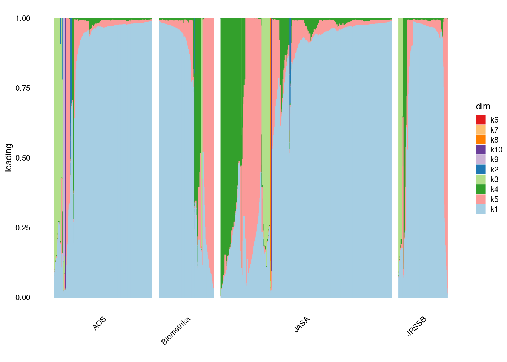
p2=structure_plot_general(fit_flash$L_pm,fit_flash$F_pm,grouping = samples$journal,std_L_method = 'row_max_1')Running tsne on 508 x 10 matrix.Running tsne on 280 x 10 matrix.Running tsne on 885 x 10 matrix.Running tsne on 251 x 10 matrix.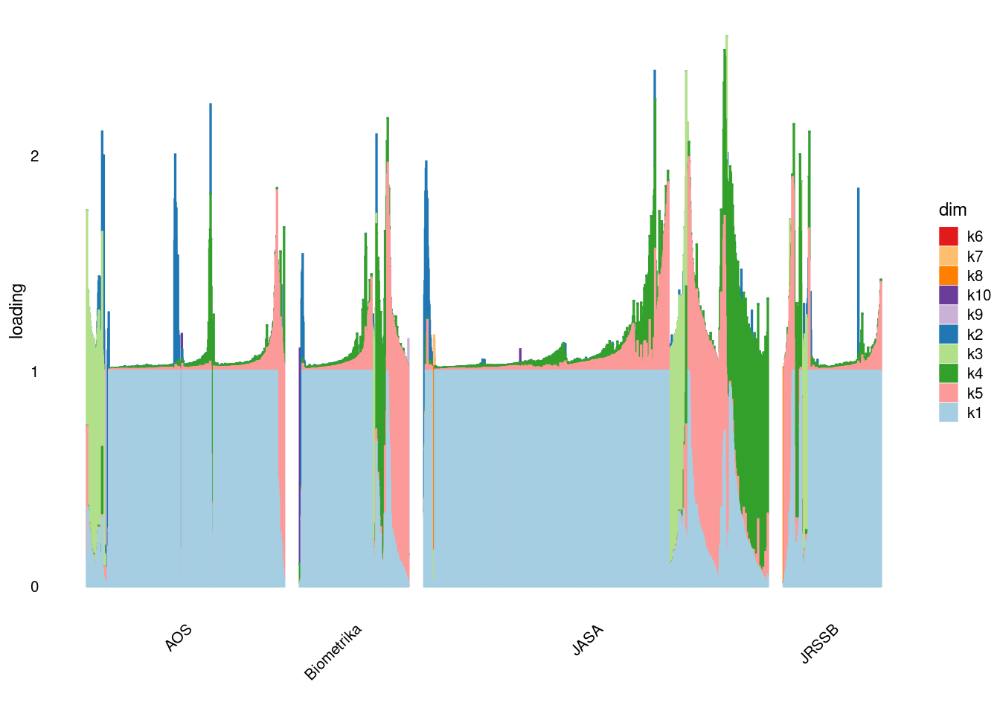
p3=structure_plot_general(fit_flash$L_pm,fit_flash$F_pm,grouping = samples$journal,std_L_method = 'col_norm_1')Running tsne on 508 x 10 matrix.Running tsne on 280 x 10 matrix.Running tsne on 885 x 10 matrix.Running tsne on 251 x 10 matrix.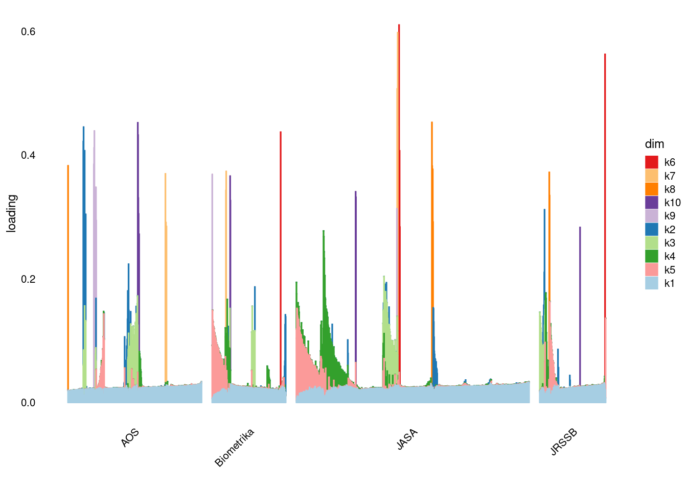
p4=structure_plot_general(fit_flash$L_pm,fit_flash$F_pm,grouping = samples$journal,std_L_method = 'col_max_1')Running tsne on 508 x 10 matrix.Running tsne on 280 x 10 matrix.Running tsne on 885 x 10 matrix.Running tsne on 251 x 10 matrix.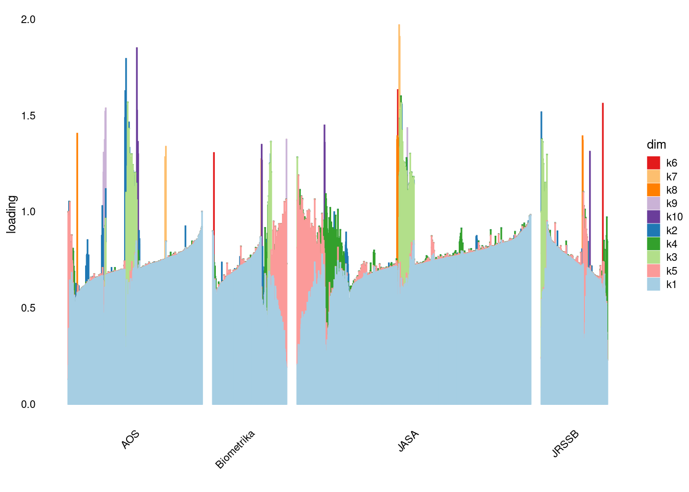
EBPMF fit
Init 1
library(ebpmf)
fit_ebpmf1 = ebpmf_log(mat,
flash_control=list(backfit_extrapolate=T,backfit_warmstart=T,
ebnm.fn = c(ebnm::ebnm_point_exponential, ebnm::ebnm_point_exponential),
loadings_sign = 1,factors_sign=1,Kmax=10),
init_control = list(n_cores=5,flash_est_sigma2=F,log_init_for_non0y=T),
general_control = list(maxiter=500,save_init_val=T,save_latent_M=T),
sigma2_control = list(return_sigma2_trace=T))Initializing
Solving VGA for column 1...
Running initial EBMF fit
Running iterations...
iter 10, avg elbo=-0.12861, K=12
iter 20, avg elbo=-0.1268, K=12
iter 30, avg elbo=-0.12592, K=12
iter 40, avg elbo=-0.1253, K=11
iter 50, avg elbo=-0.12493, K=11
iter 60, avg elbo=-0.12469, K=11
iter 70, avg elbo=-0.12449, K=11
iter 80, avg elbo=-0.12433, K=11
iter 90, avg elbo=-0.12419, K=11
iter 100, avg elbo=-0.12408, K=11#fit_ebpmf1 = readRDS('/project2/mstephens/dongyue/poisson_mf/sla/slafull_ebnmf_fit_init1.rds')
saveRDS(fit_ebpmf1,file='/project2/mstephens/dongyue/poisson_mf/sla/slafull_ebnmf_fit_w5_init1.rds')plot(fit_ebpmf1$elbo_trace)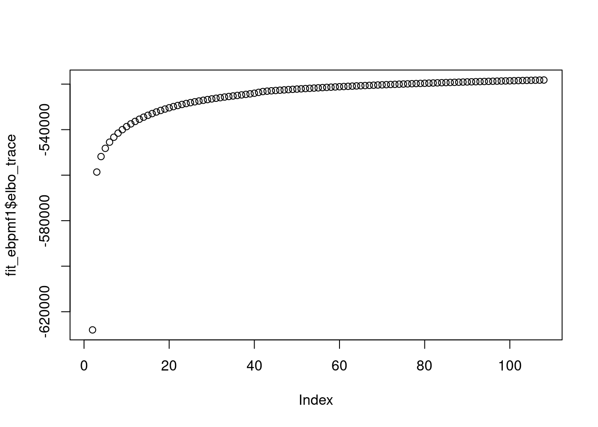
plot(fit_ebpmf1$sigma2_trace[,100])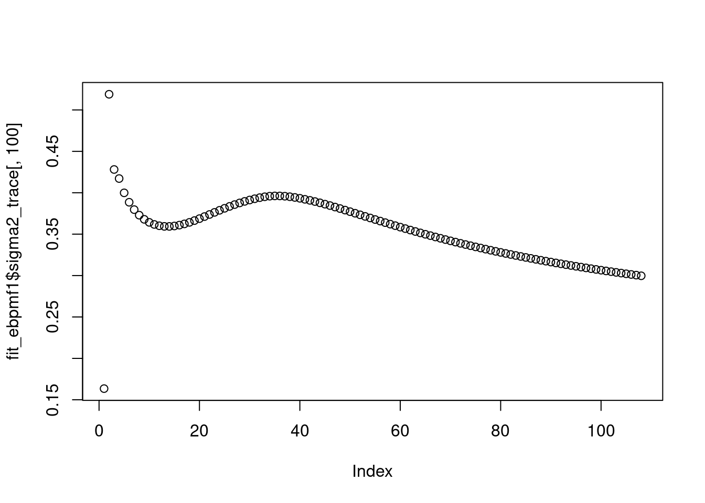
for(k in 3:fit_ebpmf1$fit_flash$n_factors){
print(colnames(mat)[order(fit_ebpmf1$fit_flash$F_pm[,k],decreasing = T)[1:20]])
} [1] "treatment" "causal" "trial" "placebo" "complianc"
[6] "assign" "depress" "adher" "arm" "patient"
[11] "noncompli" "outcom" "clinic" "estimand" "stratif"
[16] "dose" "instrument" "receiv" "prevent" "drug"
[1] "materi" "onlin" "supplementari" "supplement"
[5] "proof" "articl" "test" "data"
[9] "structur" "null" "correl" "protein"
[13] "summari" "imag" "screen" "bias"
[17] "miss" "network" "quantil" "orthogon"
[1] "health" "ozon" "agenc" "climat" "mortal"
[6] "air" "pollut" "qualiti" "nation" "year"
[11] "trend" "monitor" "public" "tempor" "survey"
[16] "chang" "futur" "environment" "report" "care"
[1] "fdr" "fals" "discoveri" "reject" "pvalu"
[6] "stepdown" "stepup" "kfwer" "hochberg" "hypothes"
[11] "fdp" "fwer" "control" "benjamini" "familywis"
[16] "singlestep" "null" "conserv" "test" "roy"
[1] "chain" "markov" "mont" "carlo" "mcmc" "posterior"
[7] "sampler" "algorithm" "bayesian" "prior" "hierarch" "infer"
[13] "comput" "model" "mixtur" "spatial" "hidden" "distribut"
[19] "space" "dirichlet"
[1] "gene" "microarray" "express" "cdna" "array"
[6] "differenti" "biolog" "thousand" "detect" "experi"
[11] "identifi" "challeng" "cluster" "cancer" "shrinkag"
[16] "profil" "cell" "hierarch" "hybrid" "diseas"
[1] "seri" "autoregress" "spectral" "stationari"
[5] "garch" "nonstationari" "move" "time"
[9] "densiti" "process" "heteroscedast" "exponenti"
[13] "local" "averag" "condit" "bootstrap"
[17] "depend" "innov" "segment" "wavelet"
[1] "statistician" "polici" "today" "scienc" "maker"
[6] "technolog" "bring" "scientist" "scientif" "live"
[11] "communic" "role" "decis" "engin" "polit"
[16] "effort" "closer" "inform" "challeng" "knowledg"
[1] "forecast" "wind" "pacif" "weather" "northwest"
[6] "speed" "energi" "probabilist" "ensembl" "hour"
[11] "calibr" "meteorolog" "geostatist" "center" "north"
[16] "predict" "resourc" "sharp" "regim" "american" p1=structure_plot_general(fit_ebpmf1$fit_flash$L_pm[,-c(1,2)],fit_flash$F_pm,grouping = samples$journal,std_L_method = 'sum_to_1')Running tsne on 508 x 9 matrix.Running tsne on 280 x 9 matrix.Running tsne on 885 x 9 matrix.Running tsne on 251 x 9 matrix.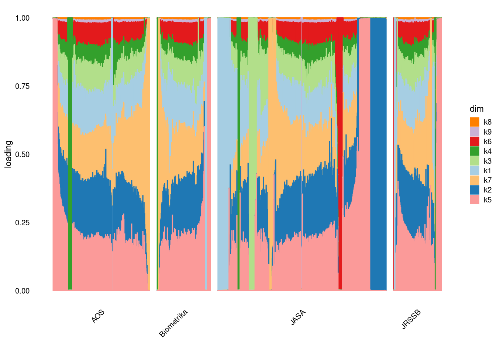
p2=structure_plot_general(fit_ebpmf1$fit_flash$L_pm[,-c(1,2)],fit_flash$F_pm,grouping = samples$journal,std_L_method = 'row_max_1')Running tsne on 508 x 9 matrix.Running tsne on 280 x 9 matrix.Running tsne on 885 x 9 matrix.Running tsne on 251 x 9 matrix.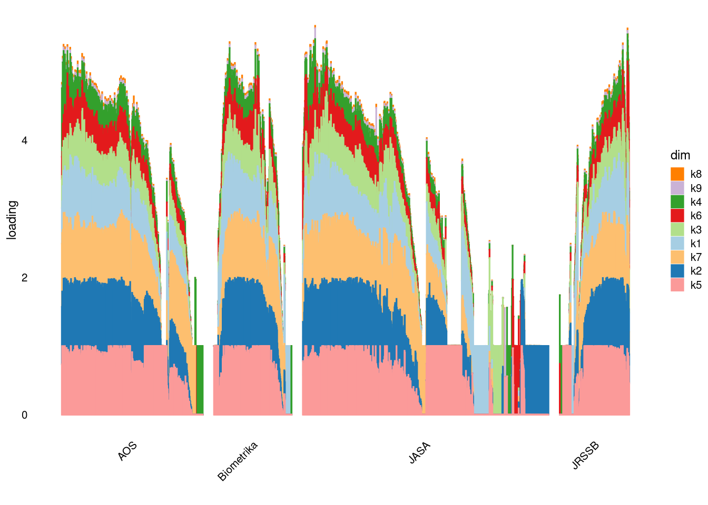
p3=structure_plot_general(fit_ebpmf1$fit_flash$L_pm[,-c(1,2)],fit_flash$F_pm,grouping = samples$journal,std_L_method = 'col_norm_1')Running tsne on 508 x 9 matrix.Running tsne on 280 x 9 matrix.Running tsne on 885 x 9 matrix.Running tsne on 251 x 9 matrix.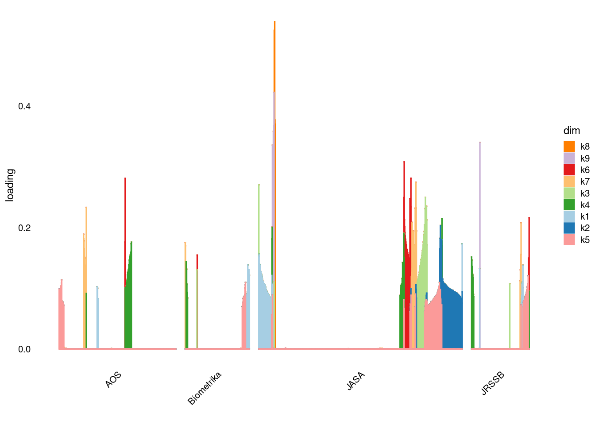
p4=structure_plot_general(fit_ebpmf1$fit_flash$L_pm[,-c(1,2)],fit_flash$F_pm,grouping = samples$journal,std_L_method = 'col_max_1')Running tsne on 508 x 9 matrix.Running tsne on 280 x 9 matrix.Running tsne on 885 x 9 matrix.Running tsne on 251 x 9 matrix.
Init 2
library(ebpmf)
fit_ebpmf2 = ebpmf_log(mat,
flash_control=list(backfit_extrapolate=T,backfit_warmstart=T,
ebnm.fn = c(ebnm::ebnm_point_exponential, ebnm::ebnm_point_exponential),
loadings_sign = 1,factors_sign=1,Kmax=10),
init_control = list(n_cores=5,flash_est_sigma2=T,log_init_for_non0y=F),
general_control = list(maxiter=500,save_init_val=T,save_latent_M=T),
sigma2_control = list(return_sigma2_trace=T))Initializing
Solving VGA for column 1...
Running initial EBMF fit
Running iterations...
iter 10, avg elbo=-0.14664, K=12
iter 20, avg elbo=-0.1416, K=12
iter 30, avg elbo=-0.13805, K=12
iter 40, avg elbo=-0.1355, K=11
iter 50, avg elbo=-0.13402, K=11
iter 60, avg elbo=-0.13292, K=11
iter 70, avg elbo=-0.13202, K=11
iter 80, avg elbo=-0.13126, K=11
iter 90, avg elbo=-0.13061, K=11
iter 100, avg elbo=-0.13005, K=11
iter 110, avg elbo=-0.12956, K=11
iter 120, avg elbo=-0.12912, K=11
iter 130, avg elbo=-0.12874, K=11
iter 140, avg elbo=-0.12839, K=11
iter 150, avg elbo=-0.12807, K=11
iter 160, avg elbo=-0.12778, K=11
iter 170, avg elbo=-0.12752, K=11
iter 180, avg elbo=-0.12727, K=11
iter 190, avg elbo=-0.12705, K=11
iter 200, avg elbo=-0.12684, K=11
iter 210, avg elbo=-0.12664, K=11
iter 220, avg elbo=-0.12646, K=11
iter 230, avg elbo=-0.12629, K=11
iter 240, avg elbo=-0.12613, K=11
iter 250, avg elbo=-0.12598, K=11
iter 260, avg elbo=-0.12584, K=11
iter 270, avg elbo=-0.12571, K=11
iter 280, avg elbo=-0.12558, K=11
iter 290, avg elbo=-0.12547, K=11
iter 300, avg elbo=-0.12536, K=11
iter 310, avg elbo=-0.12525, K=11#fit_ebpmf1 = readRDS('/project2/mstephens/dongyue/poisson_mf/sla/slafull_ebnmf_fit_init1.rds')
saveRDS(fit_ebpmf2,file='/project2/mstephens/dongyue/poisson_mf/sla/slafull_ebnmf_fit_w5_init2.rds')plot(fit_ebpmf2$elbo_trace)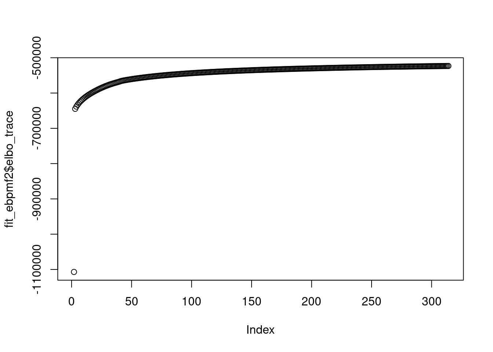
plot(fit_ebpmf2$sigma2_trace[,10])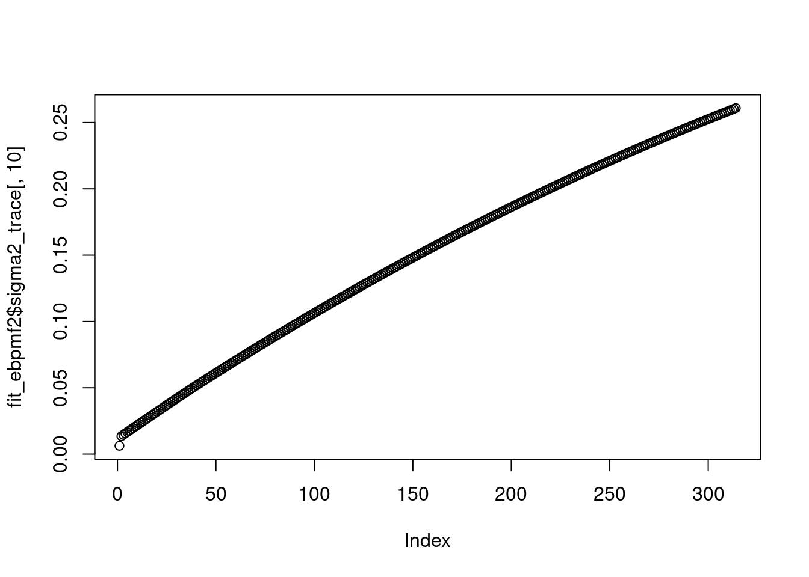
for(k in 3:fit_ebpmf2$fit_flash$n_factors){
print(colnames(mat)[order(fit_ebpmf2$fit_flash$F_pm[,k],decreasing = T)[1:20]])
} [1] "fdr" "discoveri" "pvalu" "fals" "reject"
[6] "stepdown" "hypothes" "kfwer" "stepup" "control"
[11] "hochberg" "fwer" "fdp" "benjamini" "sime"
[16] "familywis" "singlestep" "null" "multipletest" "bonferroni"
[1] "treatment" "causal" "placebo" "trial" "patient"
[6] "complianc" "adher" "depress" "assign" "arm"
[11] "dose" "noncompli" "outcom" "estimand" "vaccin"
[16] "instrument" "toxic" "physician" "drug" "dosefind"
[1] "graph" "wishart" "cone" "conjug" "famili"
[6] "matric" "graphic" "sigma" "decompos" "zero"
[11] "shape" "prior" "homogen" "edg" "ann"
[16] "invers" "nonhomogen" "probab" "definit" "dual"
[1] "bind" "motif" "transcript" "nucleotid" "width"
[6] "regim" "regul" "site" "conserv" "protein"
[11] "dna" "substant" "priori" "discoveri" "similar"
[16] "short" "live" "databas" "core" "call"
[1] "forecast" "pacif" "northwest" "calibr" "ensembl"
[6] "weather" "wind" "probabilist" "energi" "geostatist"
[11] "north" "hour" "atmospher" "american" "matern"
[16] "sharp" "regim" "meteorolog" "speed" "resourc"
[1] "climat" "greenhous" "temperatur" "mitig" "climatolog"
[6] "chang" "northern" "atmospher" "earth" "proxi"
[11] "trend" "reconstruct" "ecolog" "forc" "ozon"
[16] "centuri" "futur" "global" "environment" "public"
[1] "chain" "markov" "mcmc" "mont"
[5] "carlo" "hidden" "posterior" "revers"
[9] "jump" "sampler" "bayesian" "hierarch"
[13] "algorithm" "updat" "prior" "ergod"
[17] "parallel" "metropoli" "state" "transdimension"
[1] "cancer" "breast" "cure" "prostat" "diseas"
[6] "lung" "incid" "surveil" "tumor" "registri"
[11] "diagnosi" "surviv" "smoke" "hazard" "censor"
[16] "counti" "alter" "followup" "gene" "casecontrol"
[1] "spacetim" "site" "wind" "asymmetr" "spatial"
[6] "meteorolog" "ozon" "smoother" "monitor" "tempor"
[11] "year" "origin" "symmetr" "separ" "time"
[16] "model" "spectral" "fit" "process" "trend" p1=structure_plot_general(fit_ebpmf2$fit_flash$L_pm[,-c(1)],fit_flash$F_pm,grouping = samples$journal,std_L_method = 'sum_to_1')Running tsne on 508 x 10 matrix.Running tsne on 280 x 10 matrix.Running tsne on 885 x 10 matrix.Running tsne on 251 x 10 matrix.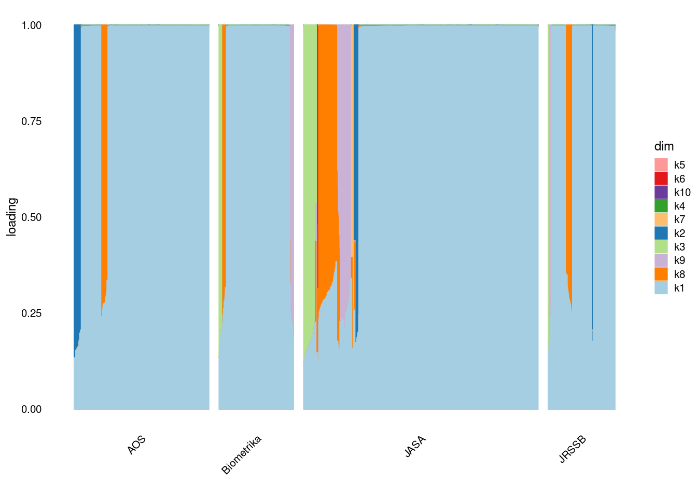
p2=structure_plot_general(fit_ebpmf2$fit_flash$L_pm[,-c(1,2)],fit_flash$F_pm,grouping = samples$journal,std_L_method = 'row_max_1')Running tsne on 508 x 9 matrix.Running tsne on 280 x 9 matrix.Running tsne on 885 x 9 matrix.Running tsne on 251 x 9 matrix.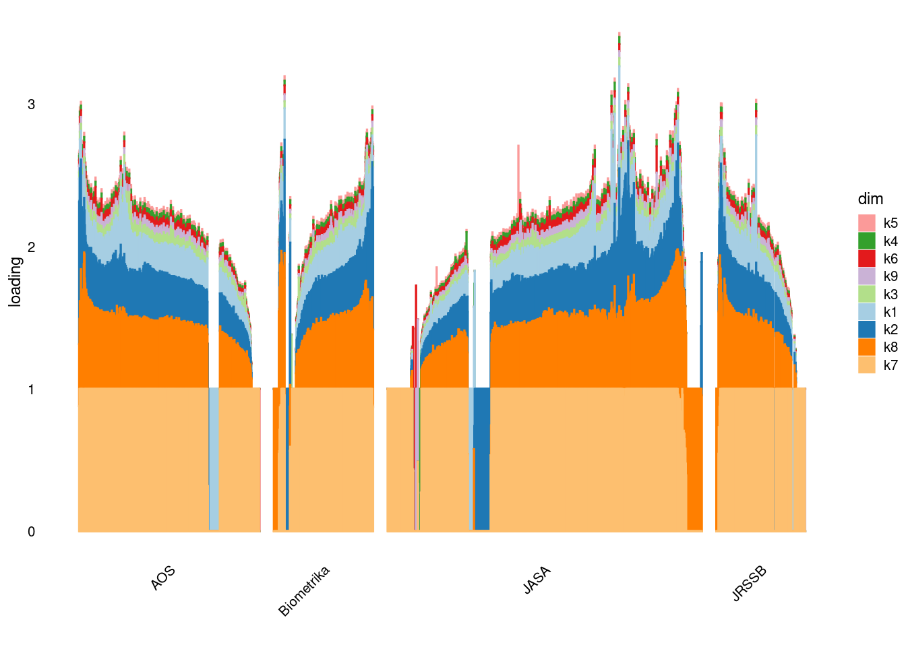
p3=structure_plot_general(fit_ebpmf2$fit_flash$L_pm[,-c(1,2)],fit_flash$F_pm,grouping = samples$journal,std_L_method = 'col_norm_1')Running tsne on 508 x 9 matrix.Running tsne on 280 x 9 matrix.Running tsne on 885 x 9 matrix.Running tsne on 251 x 9 matrix.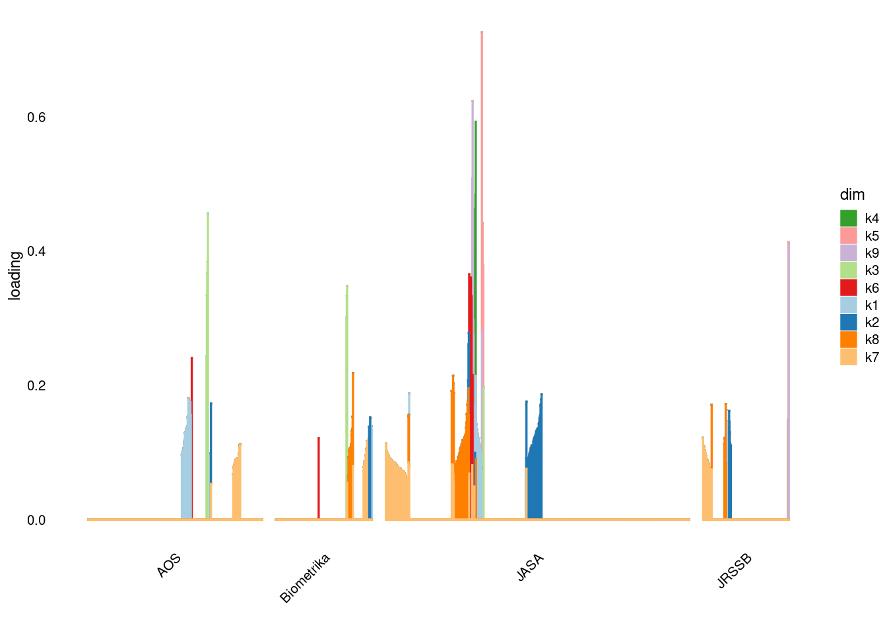
p4=structure_plot_general(fit_ebpmf2$fit_flash$L_pm[,-c(1,2)],fit_flash$F_pm,grouping = samples$journal,std_L_method = 'col_max_1')Running tsne on 508 x 9 matrix.Running tsne on 280 x 9 matrix.Running tsne on 885 x 9 matrix.Running tsne on 251 x 9 matrix.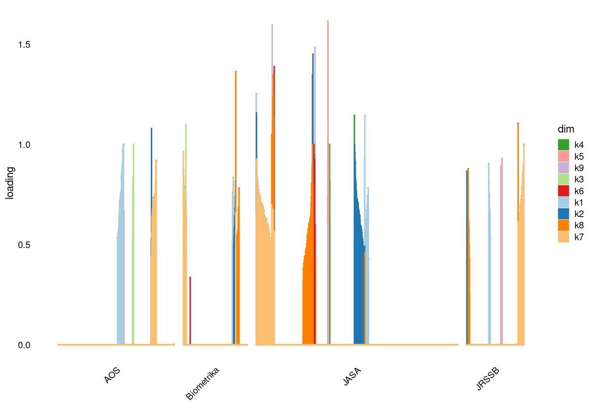
Init 3
library(ebpmf)
fit_ebpmf3 = ebpmf_log(mat,
flash_control=list(backfit_extrapolate=T,backfit_warmstart=T,
ebnm.fn = c(ebnm::ebnm_point_exponential, ebnm::ebnm_point_exponential),
loadings_sign = 1,factors_sign=1,Kmax=10),
init_control = list(n_cores=5,flash_est_sigma2=T,log_init_for_non0y=T),
general_control = list(maxiter=500,save_init_val=T,save_latent_M=T),
sigma2_control = list(return_sigma2_trace=T))Initializing
Solving VGA for column 1...
Running initial EBMF fit
Running iterations...
iter 10, avg elbo=-0.13199, K=12
iter 20, avg elbo=-0.12972, K=12
iter 30, avg elbo=-0.1285, K=12
iter 40, avg elbo=-0.12758, K=11
iter 50, avg elbo=-0.12714, K=11
iter 60, avg elbo=-0.12679, K=11
iter 70, avg elbo=-0.12648, K=11
iter 80, avg elbo=-0.12622, K=11
iter 90, avg elbo=-0.12599, K=11
iter 100, avg elbo=-0.12579, K=11
iter 110, avg elbo=-0.12561, K=11
iter 120, avg elbo=-0.12545, K=11
iter 130, avg elbo=-0.12531, K=11
iter 140, avg elbo=-0.12517, K=11
iter 150, avg elbo=-0.12505, K=11
iter 160, avg elbo=-0.12494, K=11#fit_ebpmf1 = readRDS('/project2/mstephens/dongyue/poisson_mf/sla/slafull_ebnmf_fit_init1.rds')
saveRDS(fit_ebpmf3,file='/project2/mstephens/dongyue/poisson_mf/sla/slafull_ebnmf_fit_w5_init3.rds')plot(fit_ebpmf3$elbo_trace)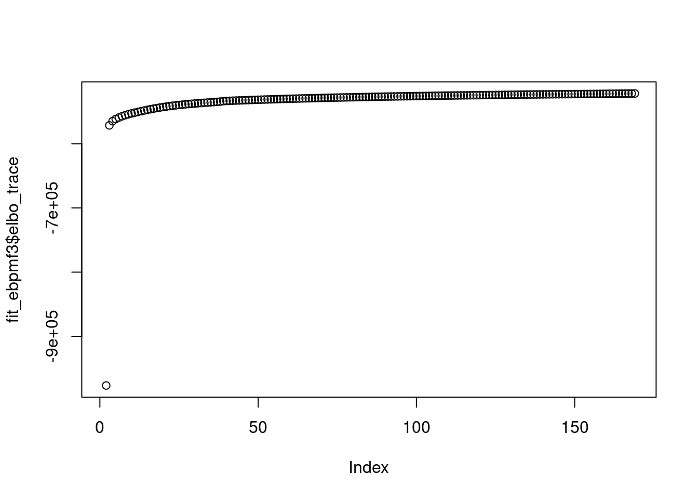
plot(fit_ebpmf3$sigma2_trace[,10])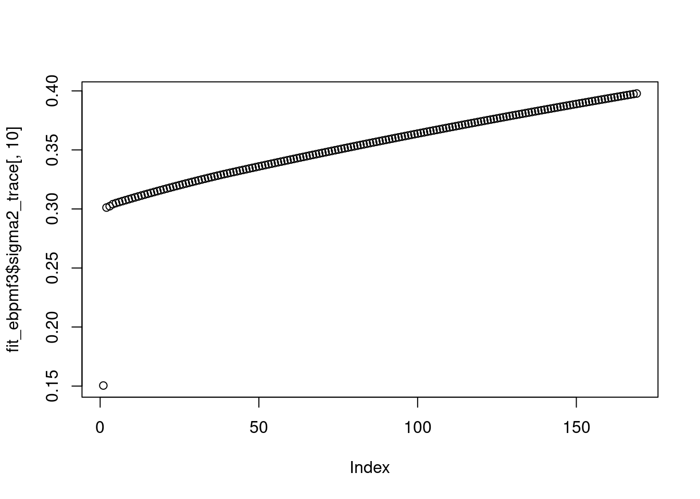
for(k in 3:fit_ebpmf3$fit_flash$n_factors){
print(colnames(mat)[order(fit_ebpmf3$fit_flash$F_pm[,k],decreasing = T)[1:20]])
} [1] "treatment" "causal" "placebo" "complianc" "depress" "adher"
[7] "arm" "trial" "noncompli" "assign" "patient" "estimand"
[13] "physician" "outcom" "elder" "encourag" "strata" "stratif"
[19] "dose" "guidelin"
[1] "virus" "immunodefici" "hiv" "viral" "human"
[6] "vaccin" "resist" "infect" "riemannian" "therapi"
[11] "pressur" "mutat" "transmiss" "syndrom" "evolutionari"
[16] "immun" "efficaci" "respiratori" "drug" "genet"
[1] "fdr" "discoveri" "fals" "pvalu" "reject"
[6] "hypothes" "stepup" "stepdown" "control" "kfwer"
[11] "hochberg" "familywis" "fwer" "fdp" "benjamini"
[16] "sime" "singlestep" "bonferroni" "holm" "null"
[1] "forecast" "pacif" "northwest" "wind" "ensembl"
[6] "weather" "meteorolog" "calibr" "probabilist" "geostatist"
[11] "energi" "north" "hour" "atmospher" "american"
[16] "matern" "sharp" "speed" "resourc" "safeti"
[1] "hazard" "surviv" "censor" "failur" "event"
[6] "cure" "recurr" "frailti" "cox" "lengthbias"
[11] "cancer" "incid" "rightcensor" "prostat" "cohort"
[16] "termin" "logrank" "transplant" "breast" "baselin"
[1] "chain" "markov" "mcmc" "mont" "carlo" "hidden"
[7] "posterior" "revers" "sampler" "jump" "updat" "gibb"
[13] "prior" "ergod" "bayesian" "dirichlet" "algorithm" "hierarch"
[19] "parallel" "augment"
[1] "climat" "greenhous" "temperatur" "climatolog" "mitig"
[6] "northern" "atmospher" "earth" "proxi" "chang"
[11] "trend" "reconstruct" "ozon" "opposit" "ecolog"
[16] "weather" "futur" "centuri" "global" "tempor"
[1] "elect" "vote" "poll" "presidenti" "polit"
[6] "station" "quick" "nonrespons" "invalid" "candid"
[11] "nonrespond" "scientist" "forecast" "evid" "nonignor"
[16] "incom" "york" "percentag" "counti" "transfer"
[1] "polici" "statistician" "disabl" "maker" "promot"
[6] "today" "disciplin" "live" "scienc" "psycholog"
[11] "decis" "organ" "foundat" "health" "student"
[16] "american" "technolog" "bring" "role" "communic" p1=structure_plot_general(fit_ebpmf3$fit_flash$L_pm[,-c(1)],fit_flash$F_pm,grouping = samples$journal,std_L_method = 'sum_to_1')Running tsne on 508 x 10 matrix.Running tsne on 280 x 10 matrix.Running tsne on 885 x 10 matrix.Running tsne on 251 x 10 matrix.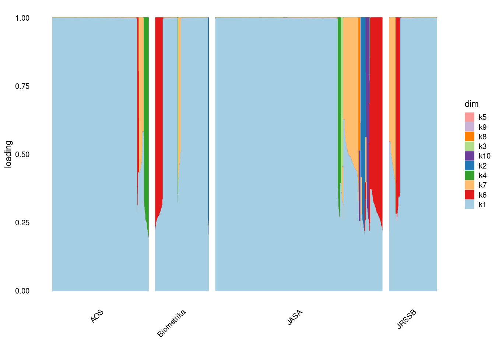
p2=structure_plot_general(fit_ebpmf3$fit_flash$L_pm[,-c(1,2)],fit_flash$F_pm,grouping = samples$journal,std_L_method = 'row_max_1')Running tsne on 508 x 9 matrix.Running tsne on 280 x 9 matrix.Running tsne on 885 x 9 matrix.Running tsne on 251 x 9 matrix.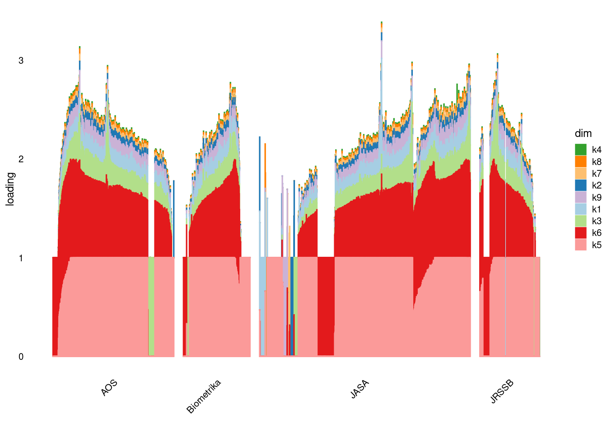
p3=structure_plot_general(fit_ebpmf3$fit_flash$L_pm[,-c(1,2)],fit_flash$F_pm,grouping = samples$journal,std_L_method = 'col_norm_1')Running tsne on 508 x 9 matrix.Running tsne on 280 x 9 matrix.Running tsne on 885 x 9 matrix.Running tsne on 251 x 9 matrix.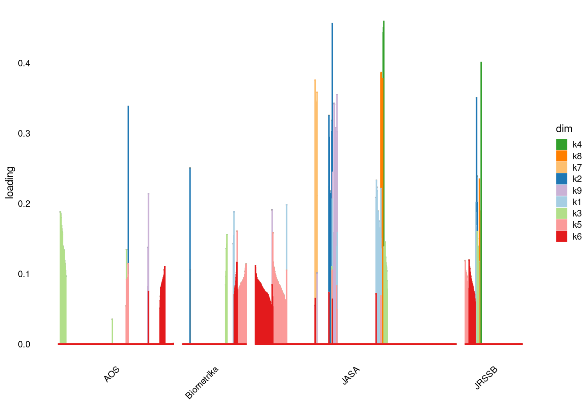
p4=structure_plot_general(fit_ebpmf3$fit_flash$L_pm[,-c(1,2)],fit_flash$F_pm,grouping = samples$journal,std_L_method = 'col_max_1')Running tsne on 508 x 9 matrix.Running tsne on 280 x 9 matrix.Running tsne on 885 x 9 matrix.Running tsne on 251 x 9 matrix.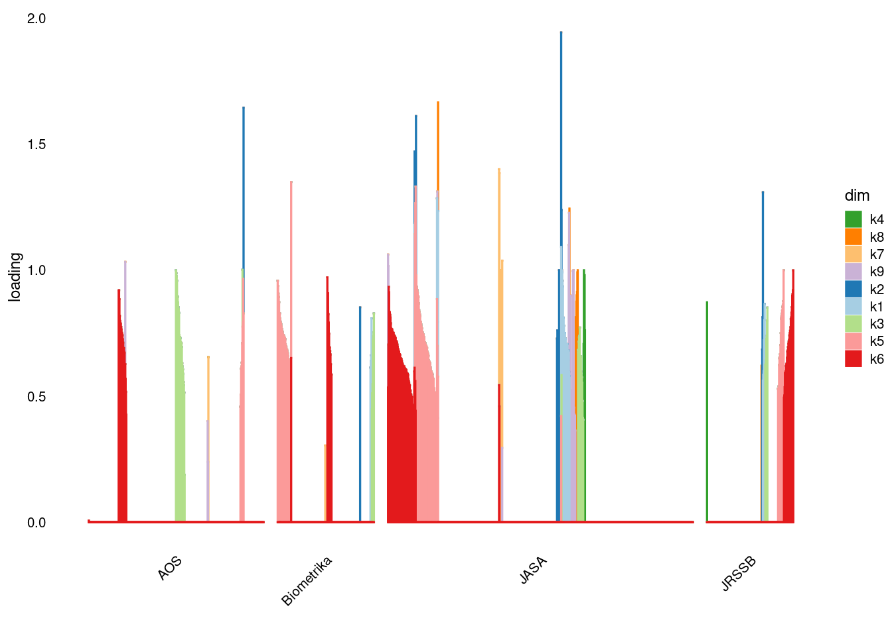
sessionInfo()R version 4.1.0 (2021-05-18)
Platform: x86_64-pc-linux-gnu (64-bit)
Running under: CentOS Linux 7 (Core)
Matrix products: default
BLAS: /software/R-4.1.0-no-openblas-el7-x86_64/lib64/R/lib/libRblas.so
LAPACK: /software/R-4.1.0-no-openblas-el7-x86_64/lib64/R/lib/libRlapack.so
locale:
[1] LC_CTYPE=en_US.UTF-8 LC_NUMERIC=C LC_TIME=C
[4] LC_COLLATE=C LC_MONETARY=C LC_MESSAGES=C
[7] LC_PAPER=C LC_NAME=C LC_ADDRESS=C
[10] LC_TELEPHONE=C LC_MEASUREMENT=C LC_IDENTIFICATION=C
attached base packages:
[1] stats graphics grDevices utils datasets methods base
other attached packages:
[1] gridExtra_2.3 ggplot2_3.4.1 ebpmf_2.3.1 flashier_0.2.51
[5] ebnm_1.0-54 magrittr_2.0.3 fastTopics_0.6-142 Matrix_1.5-3
[9] workflowr_1.6.2
loaded via a namespace (and not attached):
[1] Rtsne_0.16 ebpm_0.0.1.3 colorspace_2.1-0
[4] smashr_1.3-6 ellipsis_0.3.2 mr.ash_0.1-87
[7] rprojroot_2.0.2 fs_1.5.0 rstudioapi_0.13
[10] farver_2.1.1 MatrixModels_0.5-1 ggrepel_0.9.3
[13] fansi_1.0.4 mvtnorm_1.1-2 codetools_0.2-18
[16] splines_4.1.0 cachem_1.0.5 knitr_1.33
[19] jsonlite_1.8.4 nloptr_1.2.2.2 mcmc_0.9-7
[22] ashr_2.2-54 smashrgen_1.2.4 uwot_0.1.14
[25] compiler_4.1.0 httr_1.4.5 RcppZiggurat_0.1.6
[28] fastmap_1.1.0 lazyeval_0.2.2 cli_3.6.1
[31] later_1.3.0 htmltools_0.5.4 quantreg_5.94
[34] prettyunits_1.1.1 tools_4.1.0 coda_0.19-4
[37] gtable_0.3.1 glue_1.6.2 dplyr_1.1.0
[40] Rcpp_1.0.10 softImpute_1.4-1 jquerylib_0.1.4
[43] vctrs_0.6.2 iterators_1.0.13 wavethresh_4.7.2
[46] xfun_0.24 stringr_1.5.0 trust_0.1-8
[49] lifecycle_1.0.3 irlba_2.3.5.1 MASS_7.3-54
[52] scales_1.2.1 hms_1.1.2 promises_1.2.0.1
[55] parallel_4.1.0 SparseM_1.81 yaml_2.3.7
[58] pbapply_1.7-0 sass_0.4.0 stringi_1.6.2
[61] SQUAREM_2021.1 highr_0.9 deconvolveR_1.2-1
[64] foreach_1.5.1 caTools_1.18.2 truncnorm_1.0-8
[67] shape_1.4.6 horseshoe_0.2.0 rlang_1.1.1
[70] pkgconfig_2.0.3 matrixStats_0.59.0 bitops_1.0-7
[73] evaluate_0.14 lattice_0.20-44 invgamma_1.1
[76] purrr_1.0.1 htmlwidgets_1.6.1 labeling_0.4.2
[79] Rfast_2.0.7 cowplot_1.1.1 tidyselect_1.2.0
[82] R6_2.5.1 generics_0.1.3 pillar_1.8.1
[85] whisker_0.4 withr_2.5.0 survival_3.2-11
[88] mixsqp_0.3-48 tibble_3.2.1 crayon_1.5.2
[91] utf8_1.2.3 plotly_4.10.1 rmarkdown_2.9
[94] progress_1.2.2 grid_4.1.0 data.table_1.14.8
[97] git2r_0.28.0 digest_0.6.31 vebpm_0.4.8
[100] tidyr_1.3.0 httpuv_1.6.1 MCMCpack_1.6-3
[103] RcppParallel_5.1.7 munsell_0.5.0 glmnet_4.1-2
[106] viridisLite_0.4.1 bslib_0.4.2 quadprog_1.5-8